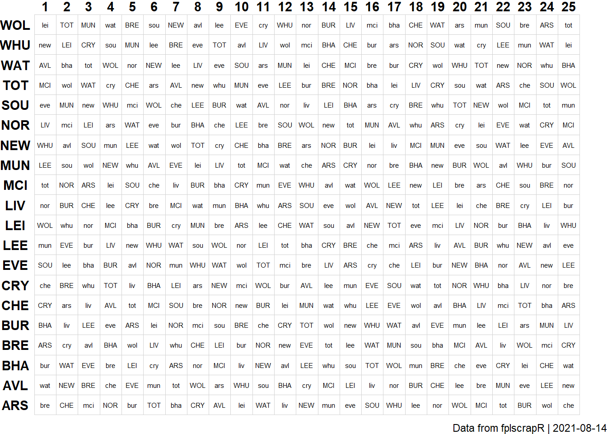

Creating an Alternative FDR’ (aFDR) ranking of opponents by FPL points allowed
Suppose now we are interested in trying to create an alternative to FPL’s “FDR” (Fixture Difficulty Ranking) based on actual FPL points allowed? Again, we take the first 25 gameweeks of the ’18/19 season as an example.
First we fetch the gameweek-by-gameweek details of ALL players using get_player_details:
library(fplscrapR) df <- get_player_details(season=18) # this may take a while to load as it fetches ALL player details
Next we use dplyr and ggplot2 to transform and plot the data, ranking the teams by FPL points allowed:
df %>% filter(round %in% 1:25) %>% # filter out the gameweeks we are interested in group_by(opponent_team) %>% # transformation to group and summarize the total_points (scored by a given player in a given round) by the opponent ('opponent_team') variable level summarize(sum(total_points)) %>% ggplot(aes(x=reorder(opponent_team,`sum(total_points)`),y=`sum(total_points)`,fill=factor(opponent_team))) + geom_col(colour="black") + theme_bw() + coord_flip() + scale_x_discrete(labels=c("1"="ARS","2"="BOU","3"="BHA","4"="BUR","5"="CAR","6"="CHE","7"="CRY","8"="EVE","9"="FUL","10"="HUD","11"="LEI","12"="LIV","13"="MCI","14"="MUN","15"="NEW","16"="SOU","17"="TOT","18"="WAT","19"="WHU","20"="WOL")) + # here we transform the numbered team labels to the FPL short letter names labs(x="Team",y="Total FPL points allowed",title="Alternative FDR ranking - by total FPL points allowed",subtitle="Season 2018/2019 - Gameweeks 1-25",caption=paste("Data from fplscrapR | ",Sys.Date(),sep="")) + scale_fill_manual(values=c("1"="#EF0107","2"="#000000","3"="#0057B8","4"="#6C1D45","5"="#0070B5","6"="#034694","7"="#1B458F","8"="#003399","9"="#FFFFFF","10"="#0E63AD","11"="#003090","12"="#C8102E","13"="#6CABDD","14"="#DA291C","15"="#241F20","16"="#D71920","17"="#132257","18"="#FBEE23","19"="#7A263A","20"="#FDB913"),guide=F) # here we add the team-specific colours to the plot

Creating an ‘Alternative FDR’ (aFDR) fixture table
Suppose now we are interested in creating an FPL fixture table that ranks fixtures by the ‘Alternative FDR’ (aFDR) metric? Again, we take the first 25 gameweeks of the ’18 season as an example.
First we create the aFDR rankings table, by fetching the gameweek-by-gameweek details of ALL players using get_player_details, and then transforming that using dplyr:
library(fplscrapR) library(dplyr) df <- get_player_details(season = 18) # this may take a while to load as it fetches ALL player details afdrranks <- df %>% filter(round %in% 1:25) %>% # filtering for the gameweeks we are interested in. group_by(opponent_team) %>% # transformation to group and summarize the total_points (scored by a given player in a given round) by the opponent ('opponent_team') variable level summarize(sum(total_points)) %>% arrange(`sum(total_points)`) %>% # ordering (arranging) by total_points allowed mutate(oppo=recode(opponent_team,"1"="ARS","2"="BOU","3"="BHA","4"="BUR","5"="CAR","6"="CHE","7"="CRY","8"="EVE","9"="FUL","10"="HUD","11"="LEI","12"="LIV","13"="MCI","14"="MUN","15"="NEW","16"="SOU","17"="TOT","18"="WAT","19"="WHU","20"="WOL")) # here we transform the numbered team labels to the FPL short letter names
Next, we fetch the full fixture list using get_game_list:
gamelist <- get_game_list(season = 18)
FPL only lists the fixtures once, as HOME-AWAY, but we need both HOME-AWAY and AWAY-HOME to plot the full fixture table. We need to plot every fixture twice, once as a home game for the one team, and once as an away game for the other team.
Using R base’s rbind and dplyr’s mutate (creating new variables) we essentially just duplicate the fixture table:
afdrfixtures <- rbind( gamelist %>% mutate(team=home,oppo=away,homeaway="home"), gamelist %>% mutate(team=away,oppo=tolower(home),homeaway="away"))
Then we need to add in the aFDR ranking for each fixture, doing so through a loop (which is decidedly not the most efficient method). For each row, we identify the data point in the afdrranks data frame that provides the aFDR ranking for each team in question:
for (i in 1:nrow(afdrfixtures)){ afdrfixtures$afdr[i] <- afdrranks$`sum(total_points)`[which(afdrranks$oppo==toupper(afdrfixtures$oppo[i]))] }
Next we use dplyr and ggplot2 to plot the data in a fixture table:
library(ggplot2) afdrfixtures %>% filter(GW %in% 1:25) %>% # filtering for the gameweeks we are interested in ggplot() + geom_tile(aes(x=GW,y=team,fill=afdr),colour="lightgrey") + geom_text(aes(x=GW,y=team,label=oppo),size=2) + theme_void() + theme(axis.text = element_text(face = "bold")) + theme(axis.text.y = element_text(margin=margin(0,-20,0,0))) + # fixing the margins scale_x_continuous(position="top",breaks=1:25) + labs(caption=paste("Data from fplscrapR | ",Sys.Date(),sep="")) + scale_fill_gradient2(guide=F,low="#00FF87",mid="#D6DCD8",high="#7F002D",midpoint=median(afdrfixtures$afdr)) # creating a gradient colour-coding that spans from lowest aFDR ranking (coloured red) to highest (coloured green)
Aubameyang ownership and net transfers for the first 25 gameweeks
Suppose we are interested in how the ownership of Pierre-Emerick Aubameyang has changed through transfers over the course of the first 25 gameweeks of the 18/19 season?
First we fetch the gameweek-by-gameweek details of the player using get_player_details, mobilising the playerid using get_player_id:
library(fplscrapR) df <- get_player_details(name="Pierre-Emerick Aubameyang",season=18)
Next we use dplyr, tidyr and ggplot2 to transform and plot the data, showing the total number of owners and net transfers out for each gameweek:
df %>% filter(round %in% 1:25) %>% # filtering for the GWs we are interested in select(round,transfers_balance,selected) %>% # selecting the relevant columns gather("var","value",-round) %>% # transforming from wide to long format for ggplot ggplot() + # plotting using ggplot2 geom_line(aes(x=round,y=value,group=var,colour=var),size=1) + theme_bw() + scale_x_continuous(breaks=1:25) + labs(x="Gameweek",title="Aubameyang ownership and net transfers",caption=paste("Data from fplscrapR | ",Sys.Date(),sep=""))

Most expensive teams by average FPL player cost
Suppose we are interested in comparing which Premier League teams have the most expensive FPL players on average?
First we fetch the full summary data on all FPL players using the get_player_info function:
library(fplscrapR) df <- get_player_info()
Next we use dplyr and ggplot2 to transform and plot the data, ranking each Premier League by its average FPL player cost:
df %>% select(id, team, now_cost) %>% # selecting the relevant columns mutate(now_cost=now_cost/10) %>% # transforming the cost to millions (for some reason the FPL data structures FPL cost as 100.000s) group_by(team) %>% # transformation to group and mean-summarize the costs at the 'team' variable level summarize(mean=mean(now_cost)) %>% mutate(teamshort = get_fdr()$short_name) %>% # using the short team names from the get_fdr function instead of codes %>% arrange(-mean) %>% # arranging by the mean cost ggplot() + # plotting using ggplot2 geom_col(aes(x=reorder(teamshort,-mean),y=mean),fill="blue") + theme_bw() + labs(x="Team",y="Mean player cost (£m)", title="Mean FPL player cost for Premier League teams", caption=paste("Data from fplscrapR | ",Sys.Date(),sep=""))

Comparing total team BPS scores for a given game
Suppose now we are interested in comparing the total BPS scores for each team in a given game? Here we take the example of game ID 1.
First we fetch the game stats using get_game_stats:
library(fplscrapR) df <- get_game_stats(gameid=1)
Next we structure a coherent data frame of the two teams’ total BPS points, using R base’s rbind and dplyr:
library(dplyr) rbind( # combining the two objects containing the home and away team's BPS points data.frame(df$a[[10]],team="away"), data.frame(df$h[[10]],team="home")) %>% group_by(team) %>% # transformation to group and summarize the value (bps points scored by a given player in the game) at the team variable level summarize(sum(value))
## # A tibble: 2 x 2
## team `sum(value)`
## <chr> <int>
## 1 away 135
## 2 home 171Top options by FPL points per 90 mins
Suppose we are interested in the top options from ’18/19, measured by FPL points per 90 mins (pp90)?
With fplscrapR, we can do that just a few lines of code:
df <- get_player_info(season=18) df %>% filter(total_points >= 30) %>% # filtering for players with more than 30 points scored mutate(pp90 = total_points / minutes * 90) %>% # creating the 'pp90' variable select(playername,pp90) %>% # selecting player name and pp90 for our table arrange(-pp90) %>% # ordering (arranging) by pp90 slice(1:20) # showing just the top20
## playername pp90
## 1 Divock Origi 7.912088
## 2 Raheem Sterling 7.602888
## 3 Leroy Sané 7.560582
## 4 Xherdan Shaqiri 7.528517
## 5 Sergio Agüero 7.362637
## 6 Eden Hazard 7.340644
## 7 Ruben Loftus-Cheek 7.255102
## 8 Mohamed Salah 7.163491
## 9 Heung-Min Son 7.038859
## 10 Gabriel Fernando de Jesus 6.991150
## 11 Riyad Mahrez 6.897070
## 12 Anthony Martial 6.807192
## 13 Pierre-Emerick Aubameyang 6.778104
## 14 Trent Alexander-Arnold 6.768293
## 15 Sadio Mané 6.758778
## 16 Lucas Pérez 6.387097
## 17 Ivan Cavaleiro 6.381093
## 18 Erik Lamela 6.248705
## 19 Aaron Ramsey 6.209249
## 20 Daniel Sturridge 6.144578Average and top entry scores for the first 25 gameweeks
Suppose we are interested in tracking the average and top FPL scores by gameweek?
First we fetch the round information for a selection of gameweeks, say 1-25 for the 18/19 season, using the get_round_info function:
library(fplscrapR) df <- get_round_info(round = 1:25, season = 18)
Next we use dplyr, tidyr and ggplot2 to transform and plot the data, showing the average and top entry progression by gameweek:
df %>% select(id,average_entry_score,highest_score) %>% # selecting the relevant columns gather("var","value",-id) %>% # transforming from wide to long format for ggplot ggplot() + # plotting using ggplot2 geom_line(aes(x=id,y=value,colour=var),size=1) + theme_bw() + scale_x_continuous(breaks=1:25) + labs(x="Gameweek",y="Score",title="Average and top FPL entry scores by gameweek",caption=paste("Data from fplscrapR | ",Sys.Date(),sep=""))
Replicating Fantasian’s playing time visualisation
Suppose we are interested in replicating Fantasian’s visualisation of playing time?
With fplscrapR, it’s just a few lines of code away. Here, we take the example of Tottenham players across the whole 18/19 season.
First, we fetch the player stats using get_player_details:
library(fplscrapR) df <- get_player_details(season = 18)
Next we use dplyr and ggplot2 to transform and plot the data in a ‘tile’ format, showing the playing time for each player across gameweeks:
df %>% filter(element %in% 351:372) %>% # selecting the 'elements' (players) from Tottenham ggplot() + geom_tile(aes(x=round,y=reorder(playername,-element),fill=minutes)) + theme_bw() + scale_x_continuous(position="top") + labs(x="Gameweek",y="Player",caption=paste("Data from fplscrapR | ",Sys.Date(),sep="")) + scale_fill_gradient2(guide=F,low="#FFFFFF",high="#132257") # filling each tile based on the 'minutes' value, from 'low' (white) to 'high' (the 'Spurs blue')

Creating your own ‘FDR’ fixture table
Suppose now we are interested in creating an FPL fixture table like the FPL’s official ‘Fixture Difficulty Ranking’? Let’s take the first 15 gameweeks of the season as an example.
First we fetch the official FDR rankings using get_fdr:
Next we fetch the full fixture list using get_game_list:
gamelist <- get_game_list()
FPL only lists the fixtures once, as HOME-AWAY, but we need both HOME-AWAY and AWAY-HOME to plot the full fixture table. We need to plot every fixture twice, once as a home game for the one team, and once as an away game for the other team.
Using R base’s rbind and dplyr’s mutate (creating new variables) we essentially just duplicate the fixture table:
library(dplyr)
fdrfixtures <- rbind( gamelist %>% mutate(team=home,oppo=away,homeaway="home"), gamelist %>% mutate(team=away,oppo=tolower(home),homeaway="away"))
Then we need to add in the FDR ranking for each fixture, doing so through a loop (which is decidedly not the most efficient method). For each row, we identify the data point in the fdr data frame that provides the FDR ranking for each team in question, depending on whether the fixture is home or away:
for (i in 1:nrow(fdrfixtures)){ ifelse(fdrfixtures$homeaway[i]=="home", fdrfixtures$fdr[i] <- fdr$strength_overall_away[which(fdr$short_name==toupper(fdrfixtures$oppo[i]))], fdrfixtures$fdr[i] <- fdr$strength_overall_home[which(fdr$short_name==toupper(fdrfixtures$oppo[i]))]) }
Next we use dplyr and ggplot2 to plot the data in a fixture table:
library(ggplot2) fdrfixtures %>% filter(GW %in% 1:15) %>% # filtering for the gameweeks we are interested in ggplot() + geom_tile(aes(x=GW,y=team,fill=fdr),colour="lightgrey") + geom_text(aes(x=GW,y=team,label=oppo),size=2) + theme_void() + theme(axis.text = element_text(face = "bold")) + theme(axis.text.y = element_text(margin=margin(0,-20,0,0))) + # fixing the margins scale_x_continuous(position="top",breaks=1:15) + labs(caption=paste("Data from fplscrapR | ",Sys.Date(),sep="")) + scale_fill_gradient2(guide=F,low="#00FF87",mid="#D6DCD8",high="#7F002D",midpoint=median(fdrfixtures$fdr)) # creating a gradient colour-coding that spans from toughest FDR ranking (coloured red) to easiest (coloured green)

Finding the names of goalscorers in a given fixture
Suppose now we are interested in finding the names of the goalscorers in a given game? Here we take the example of the first fixture of the season.
First we fetch the game stats using get_game_stats:
library(fplscrapR) df <- get_game_stats(gameid=1)
Next we identify the goalscorers’ playerids:
Finally we fetch the playernames of goalscorers using get_player_name:
get_player_name(playerid=goalscorerids)
## playername id
## 1 Wilfried Zaha 141Creating a simple fixture table
Suppose now we are interested in creating a simple overview of FPL fixtures? Again, we take the first 25 gameweeks of the season as an example.
First we fetch the full fixture list using get_game_list:
library(fplscrapR) gamelist <- get_game_list()
FPL only lists the fixtures once, as HOME-AWAY, but we need both HOME-AWAY and AWAY-HOME to plot the full fixture table. We need to plot every fixture twice, once as a home game for the one team, and once as an away game for the other team.
Using R base’s rbind and dplyr’s mutate (creating new variables) we essentially just duplicate the fixture table:
library(dplyr)
allfixtures <- rbind( gamelist %>% mutate(team=home,oppo=away,homeaway="home"), gamelist %>% mutate(team=away,oppo=tolower(home),homeaway="away"))
Next we use dplyr and ggplot2 to transform and plot the data, ranking the teams by FPL points allowed:
library(ggplot2) allfixtures %>% filter(GW %in% 1:25) %>% # filtering for the gameweeks we are interested in ggplot() + geom_tile(aes(x=GW,y=team),fill="white",colour="lightgrey") + geom_text(aes(x=GW,y=team,label=oppo),size=2) + theme_void() + theme(axis.text = element_text(face = "bold")) + theme(axis.text.y = element_text(margin=margin(0,-20,0,0))) + # fixing the margins on the tile scale_x_continuous(position="top",breaks=1:25) + labs(caption=paste("Data from fplscrapR | ",Sys.Date(),sep=""))

Comparing historical FPL total season scores for Mesut Özil and Juan Mata
Suppose we are interested in how the FPL histories of Mesut Özil and Juan Mata compare?
First we fetch the player histories of those two players using get_player_hist, mobilising their playerids using get_player_id:
library(fplscrapR) df <- get_player_hist(playerid=get_player_id(c("Mesut Özil","Juan Mata"))$id)
Next we use dplyr and ggplot2 to transform and plot the data, showing the total FPL scores by season for the two players across their FPL careers:
df %>% select(playername,season_name,total_points) %>% # selecting the relevant columns ggplot() + # plotting using ggplot2 geom_line(aes(x=season_name,y=total_points,group=playername,colour=playername),size=1) + theme_bw() + labs(x="Season",y="Total score",title="Historical FPL season scores by Özil and Mata",caption=paste("Data from fplscrapR | ",Sys.Date(),sep=""))

List your classic mini-leagues and current ranks
Suppose now we are interested in listing the classic mini-leagues of which you are a member and your current rank in those mini-leagues?
First we fetch the entry information using get_entry:
Next we select the classic league details and the relevant data columns using dplyr:
library(dplyr) df$leagues$classic %>% select(name,entry_last_rank) # selecting the columns of interest here
## name entry_last_rank
## 1 Aston Villa 0
## 2 Christmas Island 0
## 3 Gameweek 1 0
## 4 Overall 0
## 5 The Big FPL Mini League 0
## 6 Battle Of The Ages 0
## 7 The Fantasy King prem League 0
## 8 Twitter 20 0
## 9 The Pack 0
## 10 Wolfpack Members 0
## 11 FPL_Lew Mini League 0
## 12 Wolfpack Litter 0
## 13 Physio's League #3 0
## 14 Always Cheating Super League 0
## 15 Blood Sweat & Beers 0
## 16 Twitterliga 100 0
## 17 FPL Staffroom 0
## 18 2 Goals, 1 Cup 0
## 19 The weakest link 0
## 20 Teachers vs Students League 0
## 21 FPL 92 Challenge 0
## 22 League of Ordinary Gentlemen 0
## 23 Footstock Chat Prize League 0
## 24 ChampManFPL FPL League- 8cwb6c 0
## 25 Heroes and Villains 0
## 26 Fantasy Football Hub - £5,000 0My Expected Points
Suppose we are interested in how many points our team is expected to score in the next GW?
With fplscrapR, it’s just a few lines of code away.
First, we fetch the player selection using get_entry_picks. Here I use the example of random team for GW2.
library(fplscrapR) picks <- get_entry_picks(entryid=1076,gw=1)$picks
Next we fetch the Official FPL Expected Points projections using get_player_info() and select only what we need: the player id (renamed ‘element’ for merging later), the player name, and the expected points projection (‘ep_next’), which we indicate is a numeric vector.
library(dplyr) df <- get_player_info() %>% select(id,playername,ep_next) %>% mutate("element"=id) df$ep_next <- as.numeric(df$ep_next)
Finally we merge the two, select out the variables of interest, display the projections, and sum up the total expected points from our starting 11:
df2 <- left_join(picks,df,by="element") %>% select(playername,is_captain,is_vice_captain,ep_next) df2
## playername is_captain is_vice_captain ep_next
## 1 Alex McCarthy FALSE FALSE 1.3
## 2 Matt Doherty FALSE FALSE 3.4
## 3 Trent Alexander-Arnold FALSE FALSE 4.5
## 4 John Egan FALSE FALSE 2.6
## 5 Yves Bissouma FALSE FALSE 0.5
## 6 Mohamed Salah TRUE FALSE 4.5
## 7 Pierre-Emerick Aubameyang FALSE TRUE 4.5
## 8 Kai Havertz FALSE FALSE 2.4
## 9 Che Adams FALSE FALSE 1.3
## 10 Dominic Calvert-Lewin FALSE FALSE 2.8
## 11 Timo Werner FALSE FALSE 2.3
## 12 Jed Steer FALSE FALSE 0.5
## 13 Rúben Gonçalo Silva Nascimento Vinagre FALSE FALSE 0.6
## 14 Harrison Reed FALSE FALSE 1.0
## 15 Charlie Taylor FALSE FALSE 1.1sum(df2$ep_next[1:11])
## [1] 30.1Mohamed Salah’s points in each gameweek for the first 25 gameweeks
Suppose we are interested in the progression and variance of Mohamed Salah’s FPL score in each gameweek in ’18/19? Here, we take the first 25 gameweeks of the season as an example.
First we fetch the gameweek-by-gameweek details of the player using get_player_details, mobilising the playerid using get_player_id:
library(fplscrapR) df <- get_player_details(name="Mohamed Salah",season=18)
Next we use dplyr and ggplot2 to transform and plot the data, showing Salah’s round score for each gameweek:
df %>% filter(round %in% 1:25) %>% # filtering for the GWs we are interested in select(round,total_points) %>% # selecting the relevant columns ggplot() + # plotting with ggplot2 geom_col(aes(x=round,y=total_points),fill="red",size=1) + theme_bw() + scale_x_continuous(breaks=1:25) + labs(x="Gameweek",y="Round score",title="Salah's round score by gameweek",caption=paste("Data from fplscrapR | ",Sys.Date(),sep=""))
Building a very simple expected assists (xA) model
Suppose we are interested in trying to build an ‘expected assists’ (xA) model from the FPL data? Again, we take the first 25 gameweeks of the 18/19 season as an example.
First we fetch the gameweek-by-gameweek details of ALL players using get_player_details, then create our model dataset by selected information that could predict assist performance, such as Key Passes and Open Play Crosses:
library(fplscrapR) library(dplyr) df <- get_player_details(season=18) # this may take a while to load as it fetches ALL player details dfmodel <- df %>% filter(round %in% 1:25) %>% # filtering out the rounds we are interested in mutate(potentialassists = key_passes+open_play_crosses) %>% # creating a new variable that give us a potential indicator for expected assists, namely the number of key passes and open play crosses for each player select(playername,assists,potentialassists) %>% # selecting the variables we need for our analysis group_by(playername) %>% # transformation to group and summarize all our variables (i.e. the actual and potential assists) at the 'playername' variable level summarize_all(sum) %>% mutate(xA=potentialassists*(sum(assists)/sum(potentialassists))) # creating a new variable called 'xA' that attempts to predict the actual number of assists based on the relationship (from our data) between the number of assists and key passes+open play cross a player has produced
Next we use dplyr and ggplot2 to transform and plot the data, comparing the actual FPL assists with our ‘xA’ model predictions. We also use the ‘ggrepel’ package to avoid cluttering of our plot:
dfmodel %>% ggplot(aes(x=xA,y=assists)) + geom_point(alpha=0.5,size=2) + theme_bw() + labs(x="Expected assists",y="Actual assists",title="Expected vs. actual assists",subtitle="Season 2018/2019 - Gameweeks 1-25", caption=paste("Data from fplscrapR | ",Sys.Date(),sep="")) + geom_abline(intercept=0,slope=1,colour="grey",size=0.5) + geom_text_repel(size=3.75,aes( label=ifelse(xA>quantile(xA,prob=1-1.5/100),as.character(playername),ifelse(assists>quantile(assists,prob=1-1.5/100),as.character(playername),"")))) + # scale_x_continuous(limits=c(0,12),breaks=0:12) + scale_y_continuous(limits=c(0,12),breaks=0:12)
Here we can see that there is a significant variation around our expected assists. Ryan Fraser’s ouput is, for instance, well predicted. Raheem Sterling and Leroy Sanés are not - the model firmly under-estimates their assists. Meanwhile, the assists of players like Lucas Digne and Andros Townsend are far over-estimated.
Finally, we test our xA model to see how it fares in explaining the variation of actual assists, using the summary function from R base:
##
## Call:
## lm(formula = xA ~ assists, data = dfmodel)
##
## Residuals:
## Min 1Q Median 3Q Max
## -2.8933 -0.4290 -0.3280 0.2436 5.1990
##
## Coefficients:
## Estimate Std. Error t value Pr(>|t|)
## (Intercept) 0.42900 0.04669 9.189 <2e-16 ***
## assists 0.58220 0.02219 26.237 <2e-16 ***
## ---
## Signif. codes: 0 '***' 0.001 '**' 0.01 '*' 0.05 '.' 0.1 ' ' 1
##
## Residual standard error: 0.9957 on 595 degrees of freedom
## Multiple R-squared: 0.5364, Adjusted R-squared: 0.5356
## F-statistic: 688.4 on 1 and 595 DF, p-value: < 2.2e-16Replicating Who Got The Assist?’s Talisman Theory
Suppose we are interested in replicating ‘Who Got The Assist?’s famous ’Talisman Theory’ analysis for the 18/19 season, looking at the ‘key men’ for Premier League teams, players who score the largest proportion of team points. Specifically, selected non-appearance points that can be attributed to the individual player rather than the team as a whole.
With fplscrapR, we can do this analysis very easily.
First, we fetch the player stats using get_player_info:
library(fplscrapR) df <- get_player_info(season=18)
Next we manipulate the data frame to represent our needs in several steps, using dplyr:
library(dplyr)
df2 <- df %>% mutate( # creating the 'non-appearance points' variable based on goals, assists, saves, penalty saves, and bonus points, with the exact scoring diferent for each position (element_type) napts = case_when( element_type == 1 ~ round(goals_scored * 6 + assists * 3 + saves/3 + penalties_saved*6 + bonus,0), element_type == 2 ~ goals_scored * 6 + assists * 3 + bonus, element_type == 3 ~ goals_scored * 5 + assists * 3 + bonus, element_type == 4 ~ goals_scored * 4 + assists * 3 + bonus)) %>% group_by(team) %>% mutate(teamtotal = sum(napts)) %>% # summarising team totals mutate(naptsprop = round(napts/teamtotal,2)) %>% # calculating the player proportion of the team total (and rounding) top_n(n=1) # selecting the top player from each team
Finally, we create a nice-looking plot of our data, using ggplot2:
library(ggplot2)
df2 %>% ggplot() + geom_col(aes(x=reorder(second_name,naptsprop),y=naptsprop)) + theme_bw() + coord_flip() + labs(title="Who Got The Assists?'s Talisman Theory", x="Player",y="Proportion of team's non-appearance points scored",caption=paste("Data from fplscrapR | ",Sys.Date(),sep=""))

List of top performers by FPL goals and assists
Suppose we are interested in listing the top FPL performers by FPL goals and assists? Again, we take the first 25 gameweeks of the 18/19 season as an example.
First we fetch the gameweek-by-gameweek details of ALL players using get_player_details:
library(fplscrapR) df <- get_player_details(season=18) # this may take a while to load as it fetches ALL player details
Next we use dplyr and ggplot2 to transform and plot the data, showing the top performers:
df %>% filter(round %in% 1:25) %>% # filtering for the GWs we are interested in select(playername,goals_scored,assists) %>% # selecting the relevant columns group_by(playername) %>% # transformation to group and summarize the performance at the 'playername' variable level summarize_all(sum) %>% mutate("involvements"=goals_scored+assists) %>% # adding a new variable that sums the goals scored and assists arrange(-involvements) %>% # ordering (arranging) the table by top involvements slice(1:20) # showing the top20 only
## # A tibble: 20 x 4
## playername goals_scored assists involvements
## <chr> <int> <int> <int>
## 1 Mohamed Salah 16 8 24
## 2 Eden Hazard 12 10 22
## 3 Raheem Sterling 10 12 22
## 4 Sergio Agüero 14 8 22
## 5 Pierre-Emerick Aubameyang 15 6 21
## 6 Harry Kane 14 6 20
## 7 Leroy Sané 8 11 19
## 8 Callum Wilson 10 8 18
## 9 Paul Pogba 9 9 18
## 10 Alexandre Lacazette 9 8 17
## 11 Heung-Min Son 10 7 17
## 12 Marcus Rashford 9 7 16
## 13 Raúl Jiménez 9 7 16
## 14 Roberto Firmino 9 5 14
## 15 Ryan Fraser 5 9 14
## 16 Aleksandar Mitrovic 10 3 13
## 17 Sadio Mané 11 2 13
## 18 Christian Eriksen 4 8 12
## 19 Felipe Anderson Pereira Gomes 8 4 12
## 20 Gylfi Sigurdsson 9 3 12Visualizing the FPL histories of entries
Suppose now we are interested in visualizing the FPL history of two entries.
First we fetch the entry histories of two random entries using get_entry_hist:
library(fplscrapR) entryhist <- get_entry_hist(entryid=c(1001,2002))
Next we plot the historical performance using dplyr and ggplot2:
entryhist %>% ggplot() + geom_line(aes(x=season_name,y=rank,group=name,colour=name)) + theme_bw() + theme(legend.position="top") + labs(x="Season",y="Overall Rank",caption=paste("Data from fplscrapR | ",Sys.Date(),sep=""))